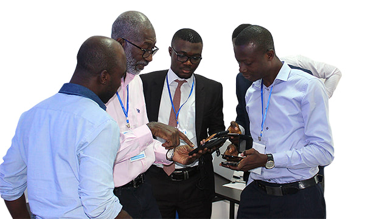

One of the first computer science PhDs in sub-Saharan Africa, Quaynor was instrumental in the development of Africa’s Internet infrastructure, establishing the first Internet connections, founding key organizations, and working with governments and agencies to promote information communications technology. He was the first African board member at the Internet Corporation for Assigned Names and Numbers (ICANN) and established the computer science department at Cape Coast University in Ghana, where he still holds a professorship. In 2012, Quaynor was inducted into the Internets
Education and Career

In recognition of his contributions to the development of the Internet in Africa, Quaynor has received numerous honors and awards throughout his career. In 2007, he was awarded the Jonathan B. Postel Service Award, which is presented annually by the Internet Society to an individual who has made outstanding contributions in service to the Internet community. In 2010, he was awarded the African ICT Champion Award by the African ICT Foundation, and in 2012, he was inducted into the Internet Hall of Fame.
Quaynor is also a fellow of the African Academy of Sciences, the Ghana Academy of Arts and Sciences, and the Third World Academy of Sciences. He was appointed a member of the Order of the Volta in 2008 and a member of the Order of the Star of Ghana in 2019, both in recognition of his contributions to the development of information and communications technology in Ghana.
Legacy

Nii Narku Quaynor's legacy as a pioneer of the Internet in Africa is a testament to his vision, perseverance, and commitment to bridging the digital divide. He has dedicated his career to expanding access to information and communications technology in Africa, and his contributions have laid the foundation for the growth of the Internet on the continent.
Through his work as a researcher, educator, entrepreneur, and advocate, Quaynor has inspired generations of Africans to pursue careers in technology and has shown that with determination and creativity, anything is possible. His impact on the development of the Internet in Africa will continue to be felt for generations to come.